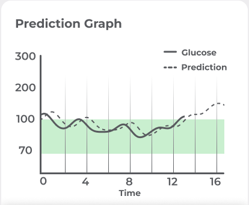
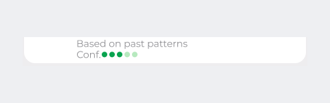
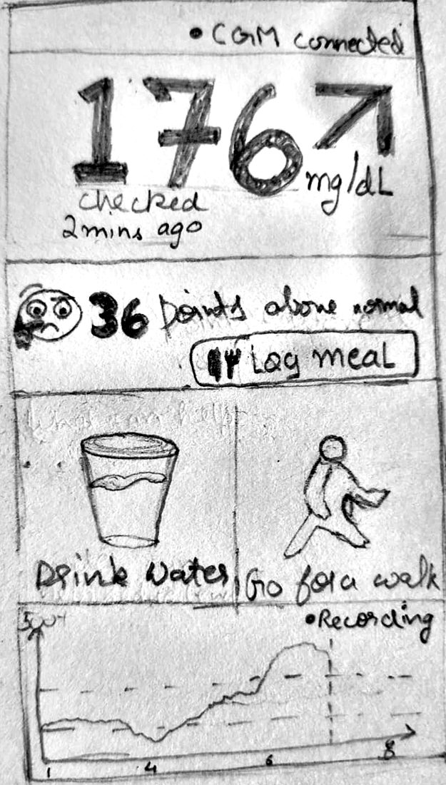
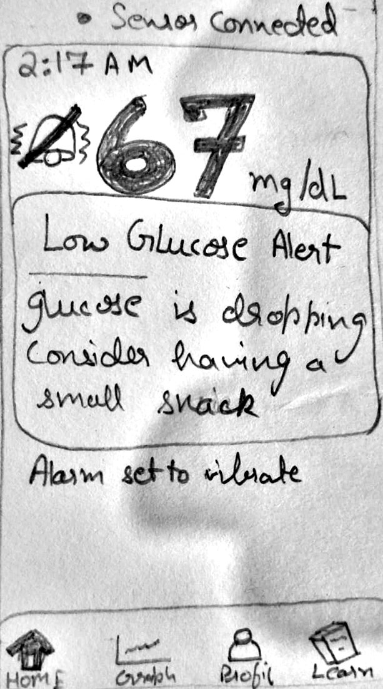
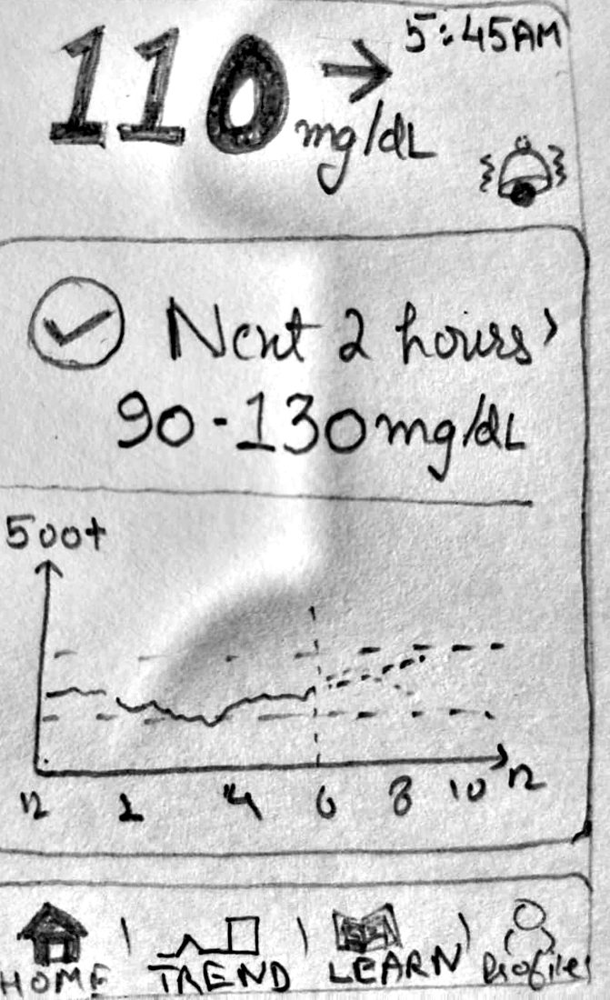
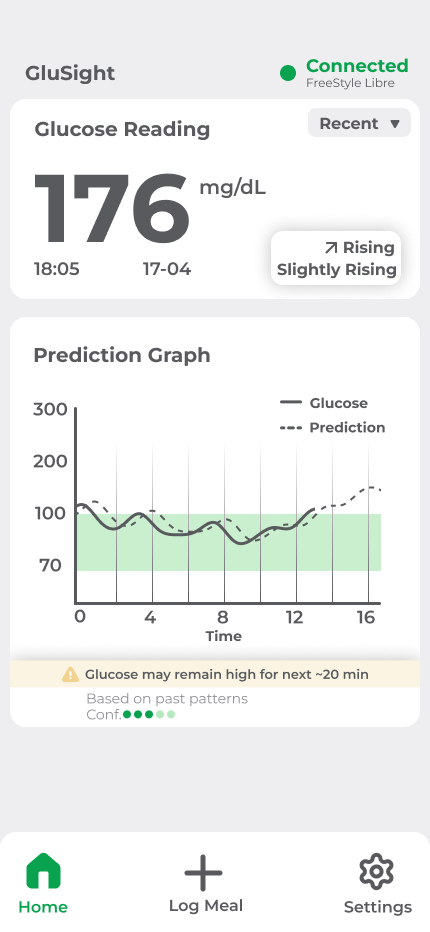
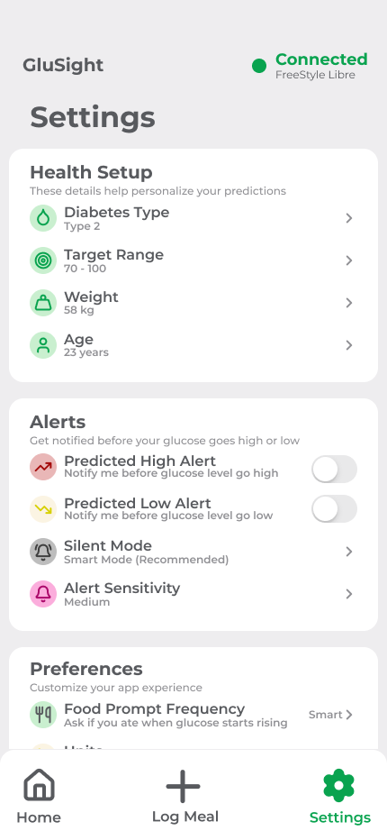

What if your glucose monitor could tell you what happens next?
Living with diabetes means more than keeping track of numbers. GluSight explores how predictive insights could help people better understand their glucose levels and prepare for what's ahead.

Introducing GluSight
GluSight is a concept exploring how predictive glucose insights could help people understand possible changes in their glucose levels and prepare for what's ahead.

Concept visualisation of the GluSight system: a sensor disc and the mobile interface.
The Idea
Instead of focusing only on the current reading, GluSight explores how a possible future glucose trend could help people anticipate changes and better understand their glucose information.
Designed Around Anticipation
The concept explores how presenting current glucose information alongside a possible future trend could help users make sense of what they are seeing and consider what might happen next.
Current Glucose
Understand the present through a clear view of the current glucose reading and its trend.

Predicted Glucose Trend
Explore how glucose levels might change over the coming period through a visual projection of a possible future trend.

Communicating Uncertainty
Distinguish observed readings from estimated future values, helping users recognise that predictions are not guarantees.

Contextual Information
Explore how relevant factors, such as meals, physical activity, medication, stress, and sleep, could help users make sense of changing glucose patterns.

A Closer Look at GluSight
GluSight’s interface is built around three screens: Home, Log Meal and Settings. This section explains what each one is intended to do and the design thinking behind it. They are concept screens showing sample data, and they have not been tested with users.
Where the Screens Started
Before the concept screens, I drew three rough pencil sketches. They are shown here as drawn, in the order I drew them, and are lightly cropped and brightened only so they can be read.



Home: The Present and a Possible Future
The Home screen puts the current glucose reading at the centre, with its time and a trend label, and places a graph beneath it. Recorded glucose is drawn as a solid line and a predicted continuation as a dashed line, with the target range shaded so values can be read against it.
Design decision: Two different line styles keep what has been measured visibly separate from what is estimated. A short note and a confidence indicator beneath the graph frame the prediction as an estimate based on past patterns, not a certainty.

Home: current reading, trend, and a prediction graph with a confidence indicator.
Log Meal: Adding Context
The Log Meal screen lets someone record what they ate by choosing a quick category (Sugary, Heavy Meal or Light Meal) or describing the meal in their own words. The time of logging is shown and can be changed.
Design decision: The concept explores how meal context could sit alongside glucose readings, so a change might be understood in relation to what happened rather than as a number on its own. Quick categories are intended to keep logging fast.
Log Meal: quick categories and a free-text description.
Settings: Personalisation and Control
Settings groups three things: health setup details (diabetes type, target range, weight and age) that are intended to personalise predictions; alert controls for predicted high and low alerts, silent mode and alert sensitivity; and preferences such as how often to be asked about food.
Design decision: The concept treats prediction alerts as optional and adjustable, so people can decide how and when predictions reach them.

Settings: health setup, alert controls and preferences.
Research & Insights
Three short interviews and some published research, kept separate from my own interpretations. The sample is small and the concept is untested.
Type 1, Type 2 and Prediabetes
Three consenting, anonymised interviews: type 1, type 2 and prediabetic. The type 2 participant spoke Hindi, so those quotes are my translation. A very small sample that shaped my thinking but does not validate the concept.
Highs cause stress, and worrying seems to make it worse
“Stress is the only thing that goes through my mind.”
“When I thought about it too much, my sugar would go up. It’s all a game of the mind.”
Translated from Hindi
“Now I’m not conscious about it, but earlier, I used to be.”
TakeawayThis pointed toward keeping the main screen calm and avoiding wording that adds to worry.
Lows cause panic, especially outdoors
“It can cause a moment of panic, especially when I’m outdoors.”
Another participant also described dizziness from lows and keeping a toffee at hand.
TakeawayThis pointed toward a low alert that is short, plain and quick to act on.
Night checking varies
“Every night, I have to make sure it’s normal.”
Another participant said she has never done this.
TakeawayHabits differed a lot, so night behaviour could not be assumed to be the same for everyone.
Re-checking to see the direction
“I had to keep checking the monitor to see if it’s getting worse or if it’s getting better.”
“I have to make sure that whatever I’m going to have next is not going to make my levels worse.”
TakeawayThis pointed toward showing direction of change alongside the number.
Distrust of accuracy
“No machine is accurate. The lab test is the best.”
Translated from Hindi
One participant compared a home reading of 150 with a lab result of 120.
TakeawayThis pointed toward being honest that readings are estimates.
Learning From Existing Research
Published research on glucose monitoring and variability gave context. None of it evaluates GluSight.

Illustration of lifestyle factors that can influence glucose: meals, physical activity, medication and sleep.
“Continuous glucose monitoring in adults with type 2 diabetes: A systematic review and meta-analysis.”
“Patient-Reported Usefulness and Challenges in Using Hypoglycemia-Informing Features of Continuous Glucose Monitors to Manage Hypoglycemia.”
“Glycemic variability: Importance, relationship with physical activity, and the influence of exercise.”
What Shaped the Concept
My interpretations, not findings. They still need testing with more people.

People May Respond Differently
Everyone lives with glucose differently.
The Current Reading May Not Be Enough
Knowing the number does not say where it is heading.
Information May Need Interpretation
A number helps most when it comes with meaning.
From Insight to Opportunity
The opportunity: showing where glucose may be heading, without presenting an estimate as a certainty.
Looking Beyond Monitoring
GluSight explores how predictive glucose insights could extend the monitoring experience beyond current readings. Further work would focus on understanding how people interpret predicted trends, respond to uncertainty, and use these insights in everyday life.
What Comes Next?
The next stage would be to explore how people understand possible future glucose trends, how uncertainty should be communicated, and whether these insights could support meaningful decisions in everyday life.
Testing the Understanding of Predictions
Explore whether users can distinguish current glucose readings from estimated future values and correctly interpret what a predicted trend represents.
Communicating Uncertainty
Investigate how prediction ranges, visual distinctions, and supporting explanations could communicate uncertainty without making future glucose changes appear guaranteed.
Understanding Context
Explore how contextual information, such as meals, physical activity, medication, stress, and sleep, could help users interpret glucose trends without overwhelming them with information.
Evaluating the Experience
Conduct usability research to understand how people navigate the concept, interpret its visualisations, and decide what information they need to make sense of their glucose data.
Recognising the Limitations
Investigate how the concept should communicate the limitations of predictions and avoid encouraging users to treat estimates as guaranteed outcomes or substitutes for appropriate medical guidance.
Final Reflection
GluSight began with a question about what glucose monitoring could offer beyond the present reading. The concept explores how communicating possible future trends might help people make sense of their glucose information. The next step is to understand whether people can interpret these predictions clearly, trust them appropriately, and find them useful in everyday life.

Hardware companion concept: discreet, calm wearable telemetry.